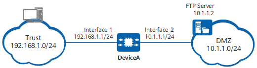

Example for Configuring FTP ASPF
Networking Requirements
DeviceA is deployed at the egress of an enterprise that provides the FTP service.
To enable intranet users to access the FTP server, in addition to configuring a security policy to allow the establishment of a control connection between the intranet users and FTP server, you need also to enable ASPF for FTP to ensure that a data connection can be successfully established between the intranet users and FTP server.
Figure 1 shows the networking diagram.

In this example, interface 1 and interface 2 represent 10GE0/0/1 and 10GE0/0/2 respectively.

Item |
Data |
Description |
|---|---|---|
10GE0/0/1 |
IP address: 192.168.1.1 Security zone: Trust |
This interface is connected to the PCs of employees and resides on the same network segment as these PCs. |
10GE0/0/2 |
IP address: 10.1.1.1 Security zone: DMZ |
This interface is connected to the server and resides on the same network segment as the server. |
User address range |
192.168.1.0/24 |
The IP addresses of the PCs of all employees are classified into the network segment and deployed in the Trust zone. |
FTP server |
10.1.1.2/24 |
FTP server is deployed in the DMZ. |
Configuration Roadmap
- Set an IP address for each interface, assign interfaces to security zones, and complete basic parameter settings.
- Configure a security policy to allow intranet users to access the FTP server.
- Configure ASPF to properly forward FTP packets.
Procedure
- Set the IP addresses of interfaces and assign the interfaces to corresponding security zones.
<HUAWEI> system-view [HUAWEI] sysname DeviceA [DeviceA] interface 10ge 0/0/1 [DeviceA-10GE0/0/1] undo portswitch [DeviceA-10GE0/0/1] ip address 192.168.1.1 24 [DeviceA-10GE0/0/1] quit [DeviceA] interface 10ge 0/0/2 [DeviceA-10GE0/0/2] undo portswitch [DeviceA-10GE0/0/2] ip address 10.1.1.1 24 [DeviceA-10GE0/0/2] quit [DeviceA] firewall zone trust [DeviceA-zone-trust] add interface 10ge 0/0/1 [DeviceA-zone-trust] quit [DeviceA] firewall zone dmz [DeviceA-zone-dmz] add interface 10ge 0/0/2 [DeviceA-zone-dmz] quit
- Configure a security policy to allow intranet users to access the FTP server.
[DeviceA] security-policy [DeviceA-policy-security] rule name policy_sec_ftp [DeviceA-policy-security-rule-policy_sec_ftp] source-zone trust [DeviceA-policy-security-rule-policy_sec_ftp] source-address 192.168.1.0 24 [DeviceA-policy-security-rule-policy_sec_ftp] destination-zone dmz [DeviceA-policy-security-rule-policy_sec_ftp] destination-address 10.1.1.2 32 [DeviceA-policy-security-rule-policy_sec_ftp] service protocol tcp destination-port 21 [DeviceA-policy-security-rule-policy_sec_ftp] action permit [DeviceA-policy-security-rule-policy_sec_ftp] quit
To protect the FTP server, you are advised to configure refined matching conditions in the security policy to allow intranet users to access only port 21 on the FTP server. In this example, the FTP server uses the well-known port (TCP 21) to provide FTP services.
- Run the detect ftp command to realize the normal forwarding of FTP packets.
[DeviceA] firewall detect ftp
Verifying the Configuration
- Run the display session all command on DeviceA to check the session table.
<DeviceA> display session all Session Table Information: Protocol : 6(TCP) SrcAddr Port Vpn : 192.168.1.2 2051 DestAddr Port Vpn : 10.1.1.2 21 Time To Live : 60s Protocol : 6(TCP) SrcAddr Port Vpn : 10.1.1.2 20 DestAddr Port Vpn : 192.168.1.2 2052 Time To Live : 60s Total : 2
Configuration Scripts
The following lists the related scripts of this configuration example.
# sysname DeviceA # interface 10GE0/0/1 ip address 192.168.1.1 255.255.255.0 # interface 10GE0/0/2 ip address 10.1.1.1 255.255.255.0 # firewall zone local set priority 100 # firewall zone trust set priority 85 add interface 10GE0/0/1 # firewall zone dmz set priority 50 add interface 10GE0/0/2 # security-policy rule name policy_sec_ftp source-zone trust destination-zone dmz source-address 192.168.1.0 24 destination-address 10.1.1.2 32 service protocol tcp destination-port 21 action permit # firewall detect ftp # return